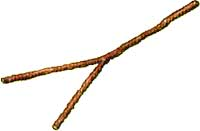
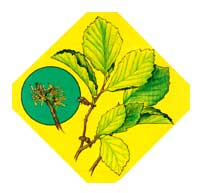

Long after summer's wildflowers have passed and autumn's leaves have flamed to glory and fallen, the woods of eastern Canada and the U.S. are still touched with color. Wild witch hazel ( Hamamelis virginiana ) waits until late September or October to send out its clusters of fragrant yellow flowers. Short-stalked, with four narrow, strap-shaped petals, the blossoms nestle in the axils of the leaves, to be followed later by woody capsules, each containing two seeds. The seeds don't ripen until the following summer, when they burst out of their pods so explosively that the shrub is also called snapping hazelnut.
Witch hazel has several other common names, such as striped alder, spotted alder, and winter-bloom, which clearly reflect the plant's appearance or growth habits. The name witch hazel itself, however, deserves further explanation. Most authorities trace the word "witch," as used here, back through Middle English wych and Anglo-Saxon wice to the Teutonic wik (from which stems our word "weak"), a term applied to various trees and shrubs having pliant branches. One can only speculate as to the relationship of wice to micce -Anglo-Saxon for witch or sorceress-and the fact that pliant branches are preferred by many practitioners of dowsing, an art regarded by some superstitious people as witchcraft. Be that as it may, early American settlers did, in fact, use branches of the shrub for so-called water witching.
It's not for its role in dowsing but for its purported medicinal properties that witch hazel is best known today. Actually, there's some doubt as to its efficacy in healing. Still, many an
American household has a bottle of witch hazel extract tucked away in the medicine cabinet for application to minor scrapes and bruises. The bark or the aromatic, astringent leaves can be used to make a somewhat bitter tea reputed to check internal hemorrhages and dysentery. Applied as a poultice, the tea is good for burns, scalds, insect bites, and inflamed swellings. Conjunctivitis and various skin problems are said to respond to this treatment. A balm, made by blending one part bark extract with nine parts simple ointment, is soothing to sores and minor burns.
Witch hazel is a deciduous tree or shrub growing from five to fifteen feet tall, with grayish bark and scalloped, oval leaves that are about three to five inches long, three inches wide, and lopsided at the base. It prefers moist, sandy loam and partial shade, and is thus found in damp woodlands. It can be propagated by seed-which normally doesn't germinate until the second spring after sowing-or by layering. There are several species that flower later than H. virginiana, such as H. mollis (Chinese witch hazel), which blooms from January through March, and H. vernalis (Ozark witch hazel), which blooms from December through March. Some species can be propagated by grafting onto H. virginiana stock in late winter or spring, and H. vernalis can be increased by root division.
Sources for this charming shrub include wildflower and tree nurseries such as [1] Gardens of the Blue Ridge, P.O. Box 10, Pineola, NC 28662 (catalog free), and [2] Forestfarm, 990 Tetherow Rd., Williams, OR 97544 (catalog $1.50).
|
 Witch hazel rods are sometimes used for dowsing |
 A bark extract makes a soothing ointment |
A witch hazel poultice relieves eyestrain and conjunctivitis. |
|
Witch hazel tea checks internal and external hemorrhages. |
|
|